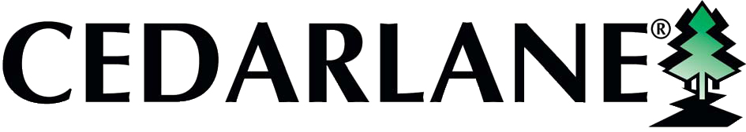
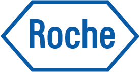
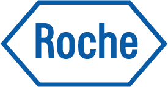
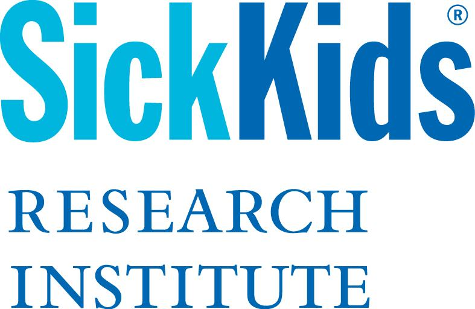
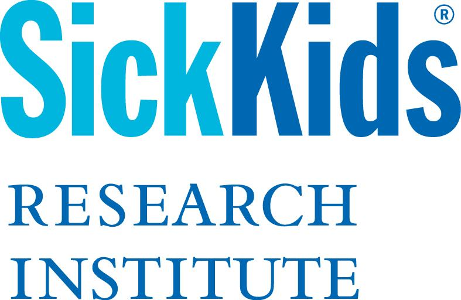

FIP 2017 Highlights Video
FIP 2017 was a wonderful success thanks to the VP's Ankur Bodalia, Kirusanthy Kaneshwaran, and Hanna Kim, as well as president Melanie Markovic, the entire GASP and FIP Council teams and the support of staff and faculty in the Department of Physiology.
Take a look back at the best moments of FIP 2017 and hear from some of the students in the department.
We would also like to extend a huge thank you to all our generous sponsors of this year's FIP!
Sponsors
Systems Level
Tissue Level

Cell Level

 

 

Protein Level

DNA Level